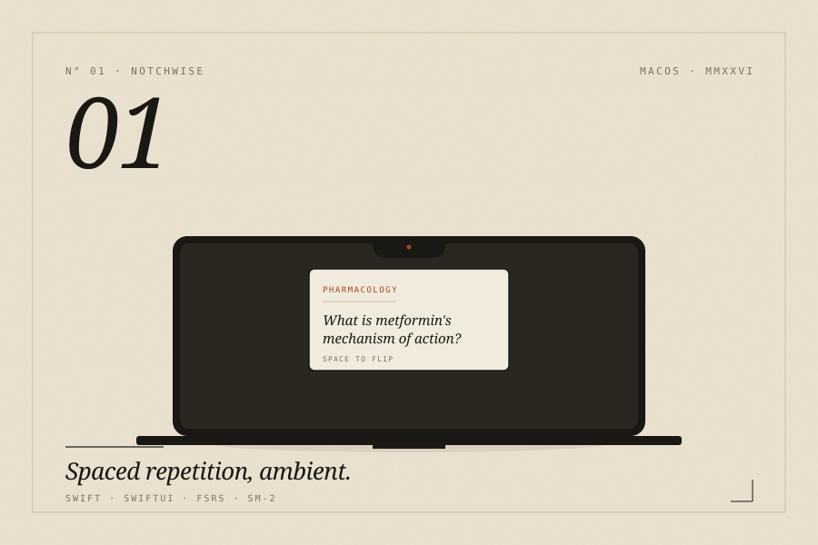

NotchWise
A flashcard app that lives in your MacBook notch, so studying fits around your work instead of interrupting it.

The work
I built NotchWise because Anki kept pulling me out of my day. I'd open it to do a few cards and twenty minutes would be gone. So I put the cards somewhere less demanding: the MacBook notch itself. The aim was to make studying something that happens in the background, not a thing you have to stop work for.
A card appears. You hover on it, flip it, rate it, and go back to what you were doing. The whole thing takes about eight seconds. By the end of the day you've done thirty cards without noticing.
It runs entirely offline. No accounts, no cloud, no telemetry. It works on every Mac, not just the ones with a notch (older machines get a floating widget in the same spot). You can import your existing Anki decks, pick between SM-2 or the newer FSRS scheduler, and keep using AnkiConnect if you already have that set up.
What it does
Works with your Anki decks
Drop in your .apkg files or connect through AnkiConnect. You can stick with SM-2 or switch to FSRS, which tends to be better at predicting what you'll actually remember.
Picks the right deck for what you're doing
If Xcode is open, it shows Swift cards. If you're reading MDN, it shows JavaScript. You don't have to switch decks yourself.
Hides itself when it should
Turns off during screen sharing, Focus modes, and presentations. You don't want your medical flashcards showing up in a meeting.
Makes cards from anything you drag in
Drop some text into the notch and it suggests front and back pairs, plus cloze deletions. It uses Apple's NaturalLanguage framework, so nothing leaves your Mac.
Built-in Pomodoro
Cards show up during your breaks, not while you're trying to focus. You end up reviewing when your brain wants a rest anyway.
The stack
Elsewhere